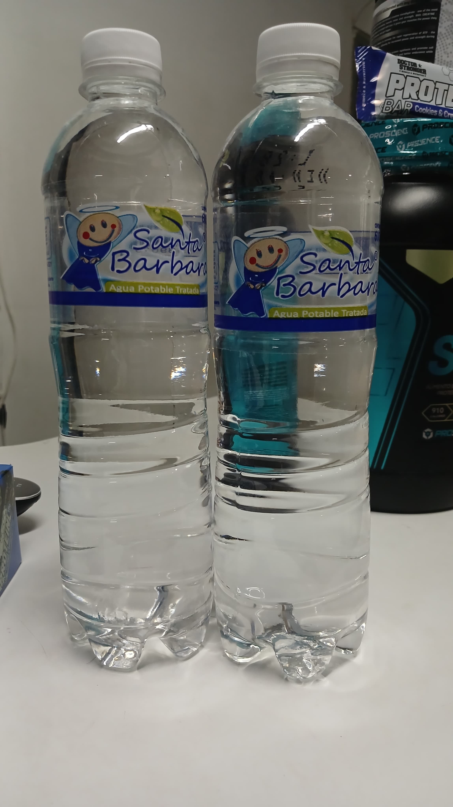
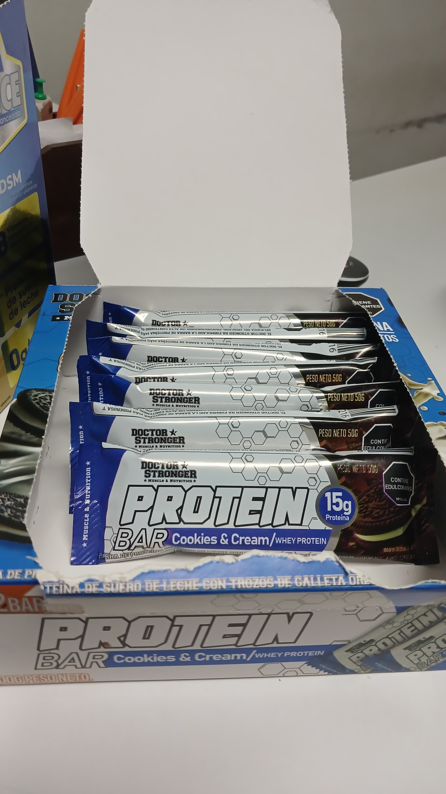
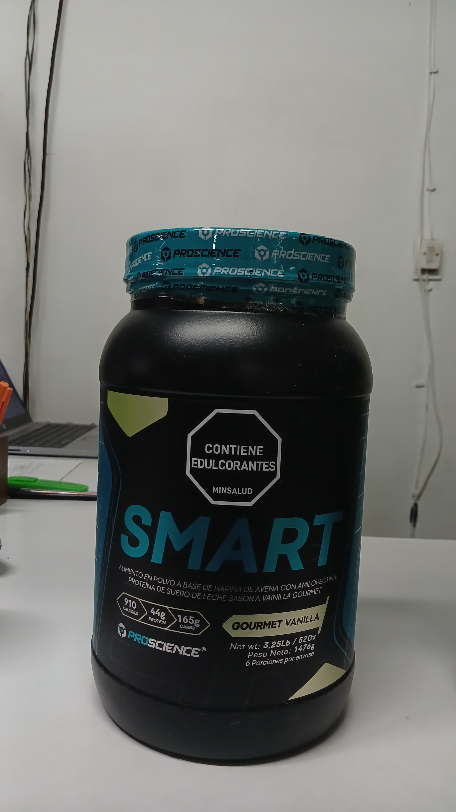
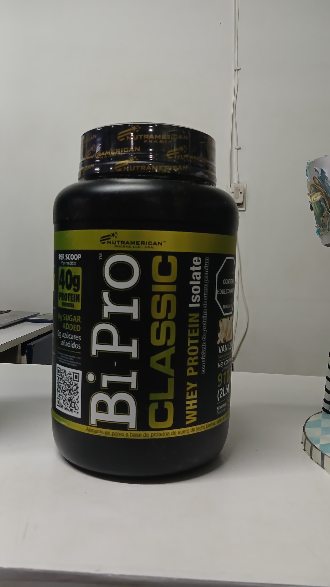

Nuestros Suplementos
En Gimnasio Olimpia, ofrecemos una selección premium de suplementos para apoyar tus metas de entrenamiento y recuperación.
Agua Mineral
Hidratación esencial durante y después de tu entrenamiento. Disponible en botellas de 500 ml.
Barras de Proteína
Prácticas y deliciosas, ideales para después del entrenamiento o como snack saludable. Sabores: chocolate.
Proteína en polvo (Smart)
Alimento en polvo a base de harina de avena con amilopectina, proeina de suero de leche sabor a Vainilla Gourmet.
Proteína en Polvo (Bi Pro)
Bipro: Proteína pura y ligera, de rápida absorción, ideal para ganar masa magra y recuperarte rápido. Sabores: Vainilla.